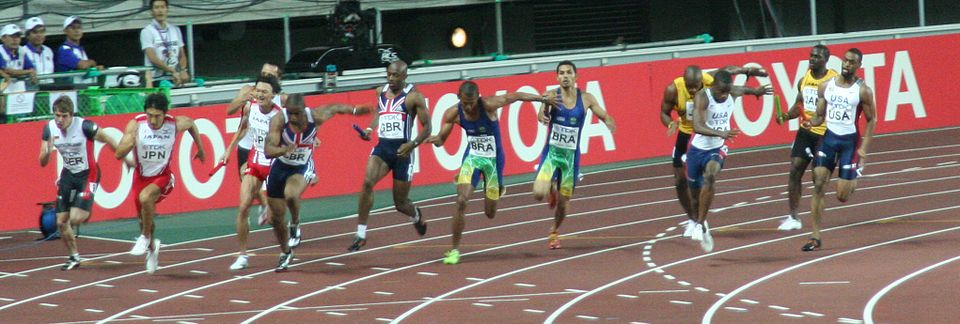

Open the hood. By the end you'll trace any agent's reasoning loop, design its memory and tools, choose its coordination pattern — and walk out with the Architecture Card for an agent you'd deploy at work.
| Session | The promise | What you built |
|---|---|---|
| S1 | LLMs can generate — but can't act | Watched a chatbot fail 4 of 6 campaign steps |
| S2 | An agent does what a chatbot can't | HR Candidate Screener: search → skills → score |
| S3 | The right prompt makes it reliable | System prompts for tone, format, refusal |
| S4 | Ground it in your own documents | Lumière Knowledge Agent — cited, refused gaps |
| S5 | Open the hood — WHY they work, break, scale | Your Agent Architecture Card |
When its candidate search came back empty, it didn't stop. It didn't say "I found nothing." It made up profiles to fill the gap.
Remove any one — it breaks in a predictable way:
A chatbot would send the batch, hit the bounce, and stop with "1 failed." The agent treats the bounce as new information, loops back, and finds another route. Follow the dots:
Same six stages as the invoice agent — but here the tool can't succeed (no way to reach real LinkedIn data), and there's no refusal rule at Reflect. Watch where the two agents diverge at the final stage:
Open your Lumière agent (re-upload the latest Lumiere_KB.md first — it now has branch coupons). Paste the loop-trace instruction above the messy customer message. Fill the 6 boxes in your workbook.
Cameras off. Mics off. Step away.
Back when the clock runs out.
| Tool | What it does | Scope — its limit | Permission |
|---|---|---|---|
| Resume Reader | Reads candidate CVs | Uploaded files only | read-only |
| Calendar API | Books interviews | Recruiter's calendar only | read + write |
| Email Sender | Contacts candidates | Approved templates — no free text | send |
| ATS Writer | Logs interview stages | Candidate records only · logged | write (audited) |
| Slack Notifier | Flags hiring managers | #hiring-ops channel only | post |
Two manifests in your workbook: the Lumière Order Assistant (≈7 min) and the harder FSSAI Regulation Monitor (≈10 min). Draft each in RCTFC, then narrow every scope and permission.

Your HR Screener ran this pattern: search → extract skills → score. Three specialists, one baton.
Split 500 résumés across four agents, run them at once, merge the results. Speed is the win.
Three specialists. Three phases. Each handing to the next. Now you know what to call it.
A new country means a new regulator (FSA, not FSSAI). One monitor isn't enough. Ask Claude which of the 3 patterns fits — then push back if it over-automates.
The HR Screener hallucinated because of three gaps — no episodic memory, no reflect step, no exit condition. Not bugs in the model. Choices in the build. You now know how to make those choices.
Bring the Architecture Card. Loop Trace → system prompt. Tool Manifest → configured tools. Pattern Choice → single agent or pipeline. The card becomes the agent.